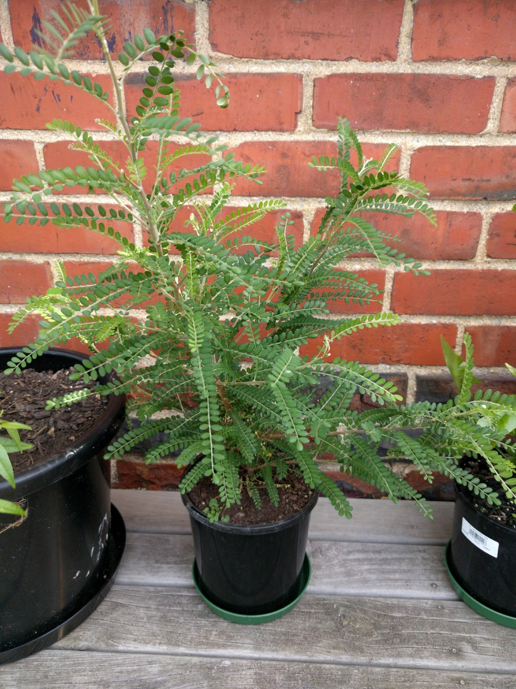

Part shade, Sun, NZ Native, Height 1.5 x 1.5m
Sophora molloyi 'Dragon's Gold'
Evergreen. 'Kowhai'. A superb small ornamental shrub with fine green foliage and producing a showy display of 'Kowhai' lemon-yellow blooms in spring. A choice selection for the front of shrub borders or in containers.
Cultural: Kowhais frow well in full sun and in most soils provided there is good drainage and adequate moisture. All are bird attractants
Caution: Seeds are toxic if eaten.
